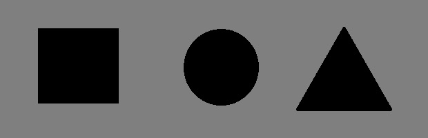

Клікайте по фігурах для швидкого переходу між роботами:

| Фігура на карті | Файл посилання |
|---|---|
| Прямокутник (Rect) | Домашня сторінка (BezotosnyiLab02-9.html) |
| Коло (Circle) | Мої гіперпосилання (BezotosnyiLab08-6.htm) |
| Многокутник (Poly) | Моя Батьківщина — Полтава (BezotosnyiLab09-3.htm) |